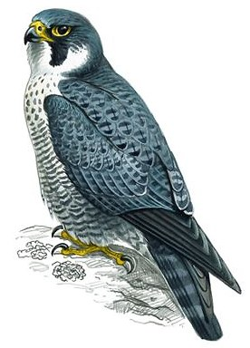

B1 · Technology
The Text
Play the audio and follow along, then read it again on your own. Hover over a highlighted word to see what it means.
Listen & Read
Robot Birds
A city with too many pigeons, and a solution that worked for about as long as you would expect.
Liverpool city council had a pigeon problem, and its answer was to put mechanical falcons on the roofs.
The problem itself is common to most European city centres and is not really about pigeons. A pigeon's natural diet is seeds and insects, and on that diet a pigeon stays a normal size and a normal number. In a city centre it eats what people drop and what people hand it, which is bread, chips and whatever else is going, and on that diet the birds get heavier and, far more importantly, they breed more often. A city pigeon population is a direct measurement of how much food it is being given.
The council's position was therefore that everybody who feeds the birds is responsible for the number of them, which is unpopular to say and difficult to argue with. The aim was not to remove pigeons from the city but to move them out of the centre and into the parks and open spaces, where they would go back to eating what pigeons eat.
The mechanical birds were the visible part of the plan. Ten of them, known as robops, were placed on rooftops around the centre. They were modelled on the peregrine falcon, which hunts pigeons and is the fastest animal on earth in a dive, and they were built to move between positions, turn their heads, flap their wings and play recorded falcon calls. They could be moved to a different roof so that the pigeons did not learn where they were.

That last detail is the interesting one, because it tells you the designers already knew the weakness. Birds habituate. A pigeon that sees a predator which never actually catches anything will, after a while, stop treating it as a predator, and no amount of wing-flapping fixes that. Scarecrows have the same problem and have had it for centuries.
The scheme was introduced in the years before Liverpool became European Capital of Culture, and the city did hold that title. Whether the robots made a lasting difference is harder to say, and cities that have tried similar devices since have generally found the effect wears off. The approaches that do work are duller: covering bins properly, closing the gaps in buildings where the birds nest, and persuading people to stop feeding them — which brings the whole thing back to the sentence the council started with.
Vocabulary
- council — the elected body that runs a city
- diet — the food an animal or a person normally eats
- to breed — to produce young
- to hand somebody something — to give it to them directly
- whatever is going — whatever happens to be available
- unpopular — disliked by most people
- rooftop — the top surface of a building
- to model on — to build something in imitation of
- peregrine falcon — a bird of prey that hunts other birds in flight
- dive — a steep downward flight at high speed
- to flap — to move wings up and down
- to habituate — to get used to something until it stops having an effect
- predator — an animal that hunts and eats others
- scarecrow — a figure put in a field to frighten birds away
- to wear off — to gradually stop having an effect
- bin — a container for rubbish
- to nest — to build a home and raise young
- dull — not exciting
Interactive Exercises
Practice
Complete each exercise, then click Submit to see your score and an explanation for every answer.
Speaking & Writing
Discussion
There are no right answers here — use these to practice speaking, or write a short answer to each.
- The council's honest answer was unpopular and the robots were not. Why do cities prefer visible solutions to effective ones?
- “The approaches that do work are duller.” Where else is that true?
- Is feeding birds in a city a kindness or a problem? Argue one side.
- Scarecrows stopped working centuries ago and people still use them. Why?
- Write about 150 words describing a problem in your own city and a solution that looks good but would not work.